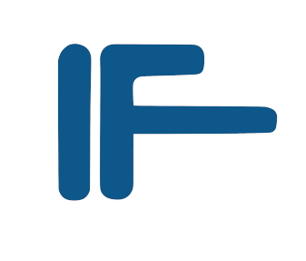
Institut Teknologi Sepuluh Nopember
Gedung Teknik Informatika Institut Teknologi Sepuluh Nopember (ITS) Surabaya merupakan pusat kegiatan akademik dan penelitian Departemen Teknik Informatika, salah satu departemen terkemuka di bidang ilmu komputer di Indonesia. Gedung ini menampung berbagai fasilitas, mulai dari ruang kelas dan laboratorium penelitian hingga ruang dosen, aula, dan area sosial mahasiswa yang tersebar di tiga lantai. Melalui aplikasi virtual tour ini, Anda dapat menjelajahi tiga belas lokasi di dalam dan sekitar gedung secara interaktif langsung dari peramban, tanpa memerlukan instalasi perangkat lunak tambahan. Rekonstruksi tiga dimensi dilakukan menggunakan teknologi 3D Gaussian Splatting yang menghasilkan representasi visual berkualitas tinggi dari setiap ruangan.
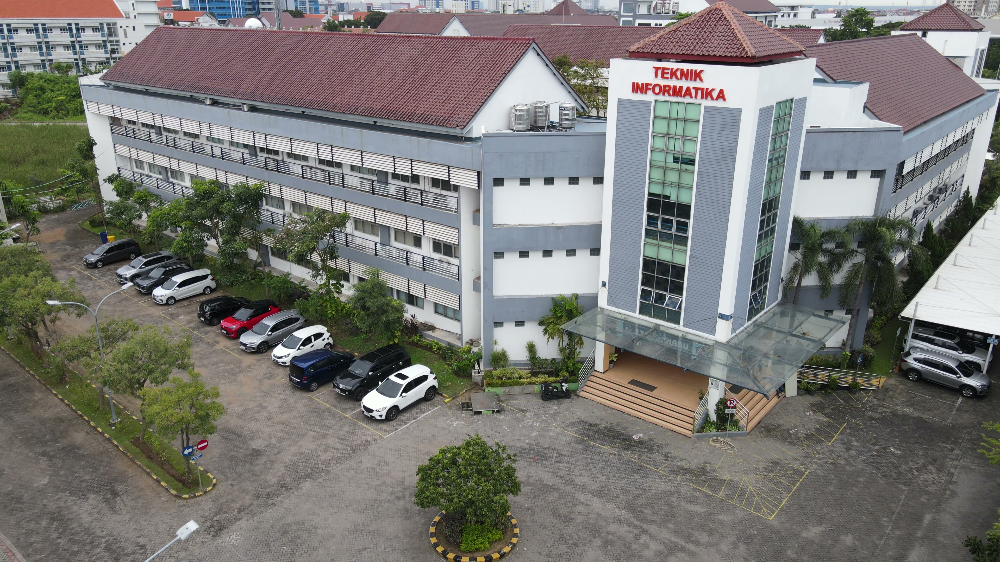
Gedung utama Departemen Teknik Informatika ITS, terdiri dari 3 lantai
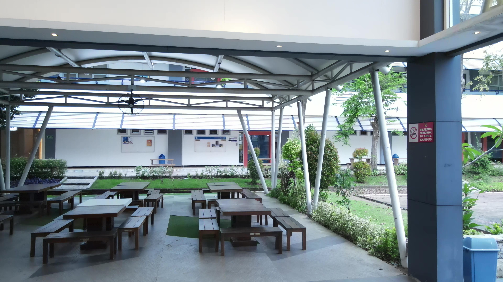
Area terbuka untuk kegiatan akademik dan sosial mahasiswa.
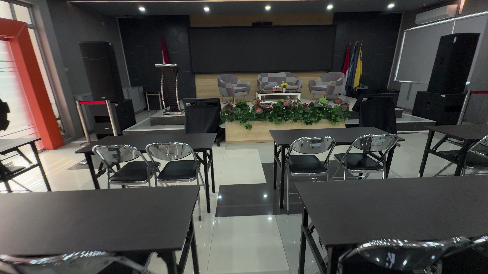
Ruang pertemuan berkapasitas besar untuk seminar dan acara departemen. Ruang AULA dinamakan menjadi Ruang AULA- Prof. Handayani Tjandrasa sebagai penghargaan kepada Prof. Handayani Tjandrasa yang memasuki masa purnatugas
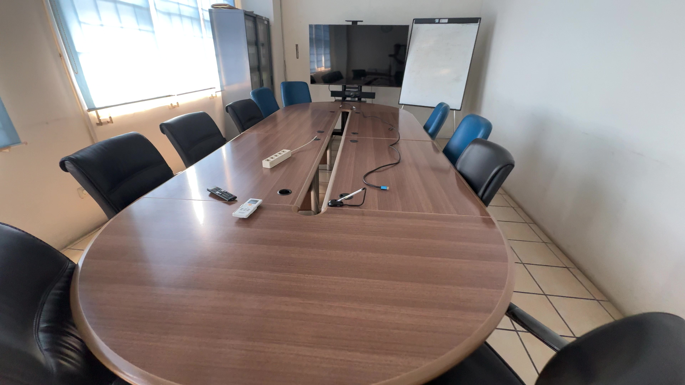
Ruang rapat resmi untuk kegiatan dosen dan pimpinan departemen
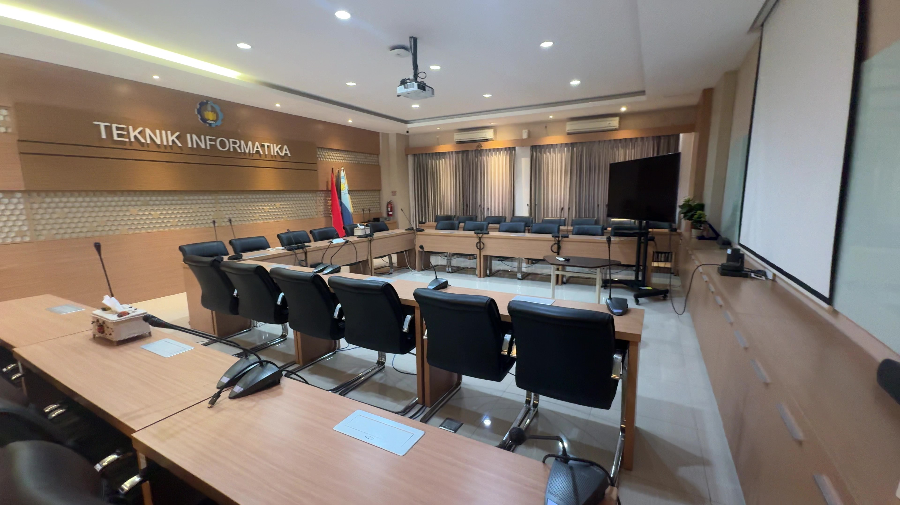
Departemen Teknik Informatika memiliki Ruang Sidang yang representatif dan berstandar internasional, yang dapat menampung 40 orang
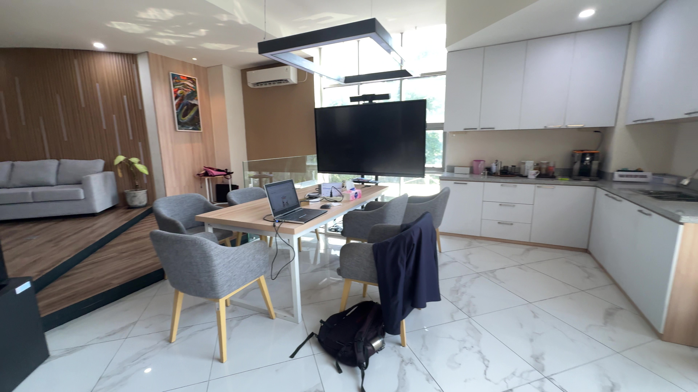
Lounge untuk kegiatan dosen dan tamu
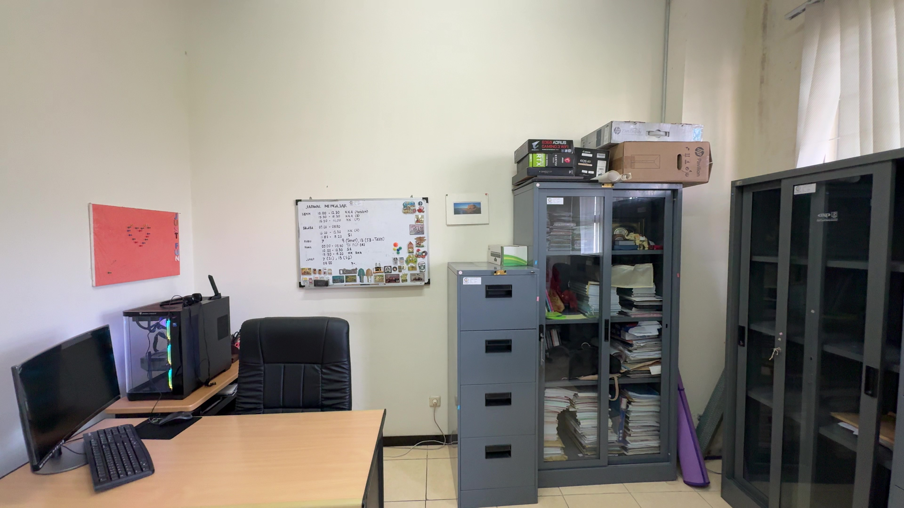
Ruang kerja dosen Departemen Teknik Informatika
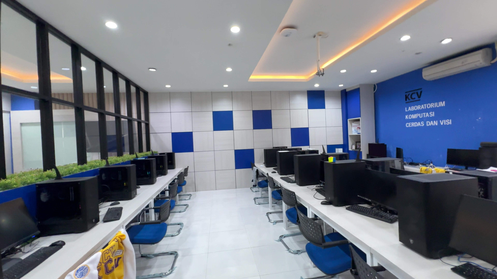
Laboratorium Komputasi Cerdas dan Visi. Di Laboratorium ini ditawarkan bidang keahlian yang ditekankan pada kemampuan lulusan dalam memanipulasi dan menganalisis data citra pada berbagai bidang aplikasi (a.l. biomedika, industri), kemampuan menerapkan metode sistem cerdas pada berbagai bidang aplikasi dan kemampuan memodelkan dan mengoptimasikan sistem nyata.
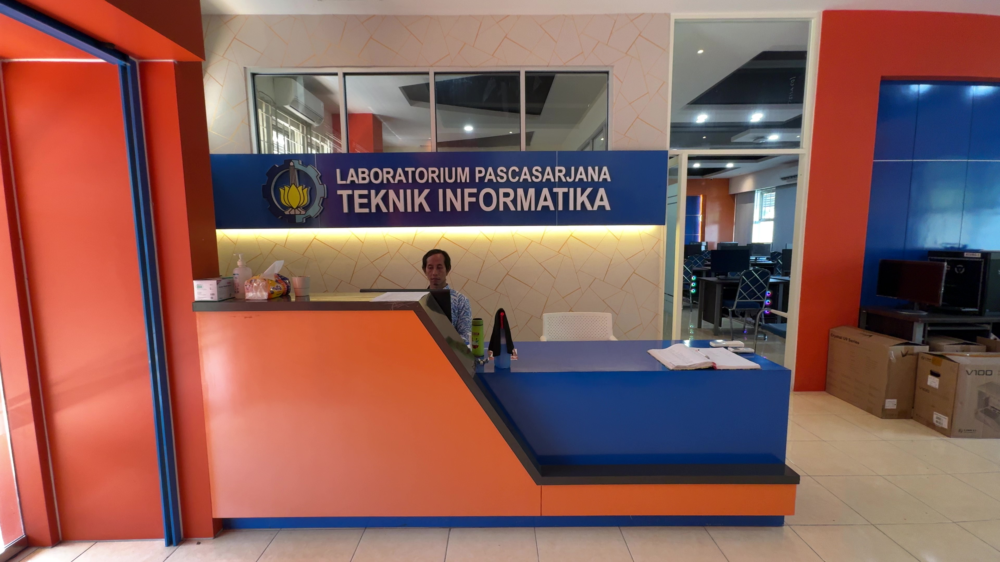
Laboratorium ini merupakan fasilitas mahasiswa program master untuk menyelesaikan tugas-tugas kuliah dan tesis seperti studi literatur, ujicoba aplikasi/data, dan penulisan tesis. Selain laboratorium ini mahasiswa program master dapat juga menggunakan laboratorium bidang minat sesuai dengan bidang penelitian masing-masing.
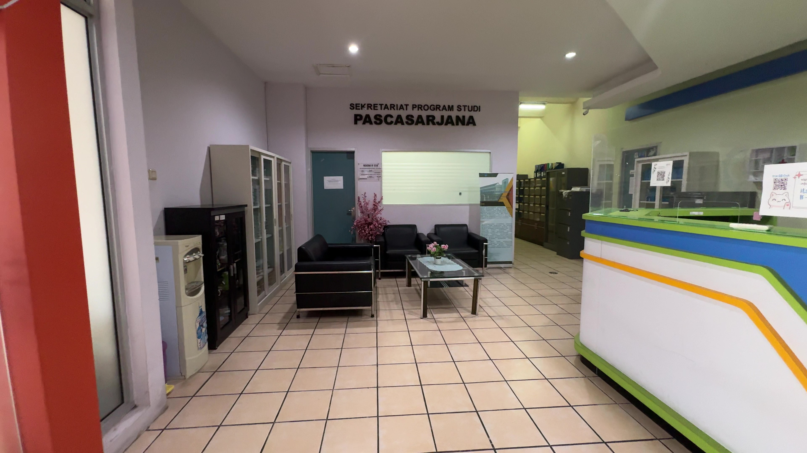
Area lobi gedung pascasarjana Teknik Informatika
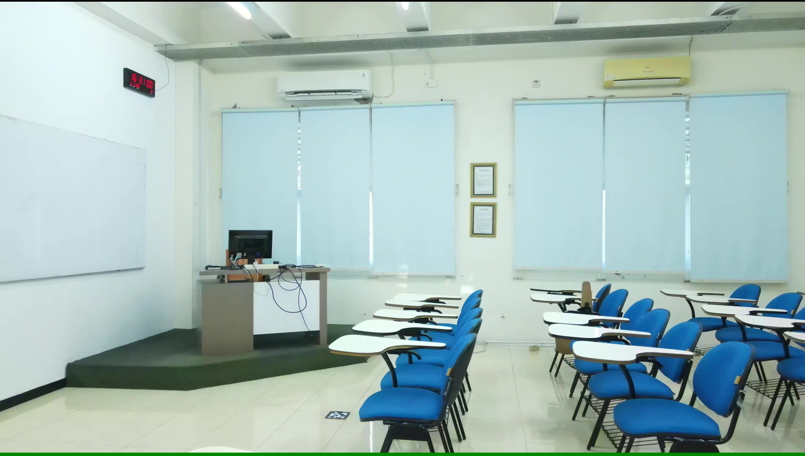
Ruang kelas perkuliahan berkapasitas 40 orang
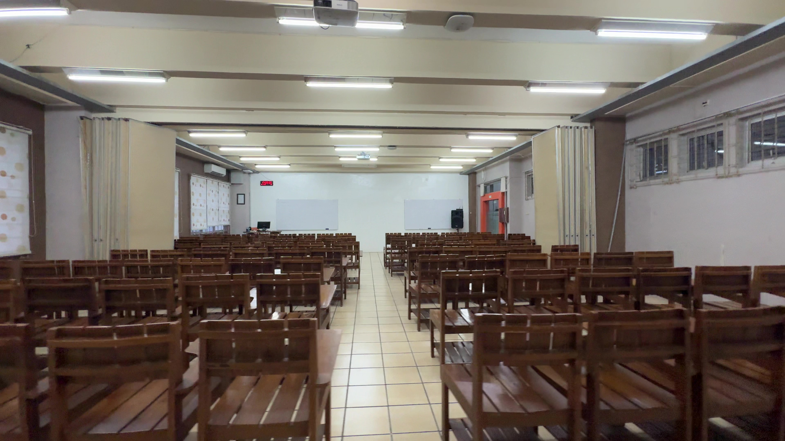
Ruang kelas perkuliahan berkapasitas besar dapat menampung hingga 100 orang
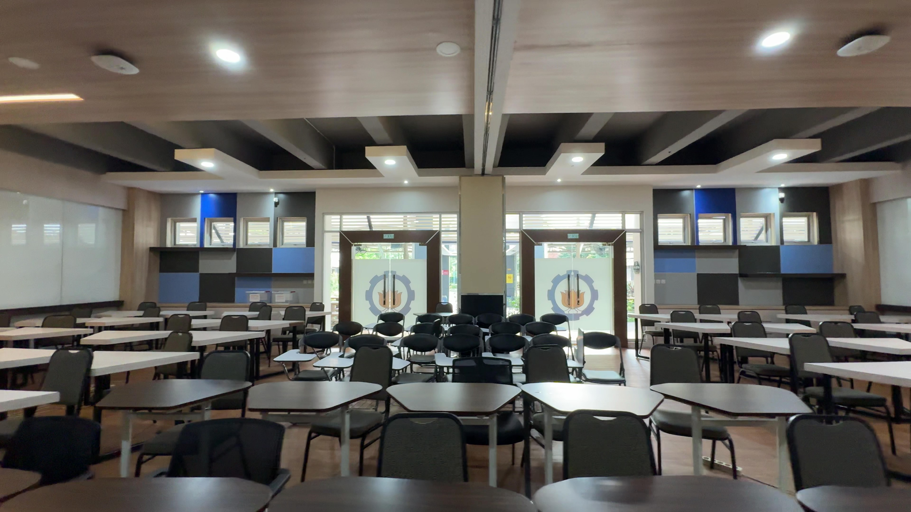
Smart Classroom dengan fasilitas pembelajaran modern
Al Dhihya Gaza Halim Putra
Mahasiswa Tugas Akhir · NRP 5025221288
Departemen Teknik Informatika, Institut Teknologi Sepuluh Nopember
Prof. Dr. Eng. Nanik Suciati, S.Kom, M.Kom
Dosen Pembimbing 1 · NIP 197104281994122001
Departemen Teknik Informatika, Institut Teknologi Sepuluh Nopember
Rizky Januar Akbar, S.Kom, M.Eng
Dosen Pembimbing 2 · NIP 198701032014041001
Departemen Teknik Informatika, Institut Teknologi Sepuluh Nopember